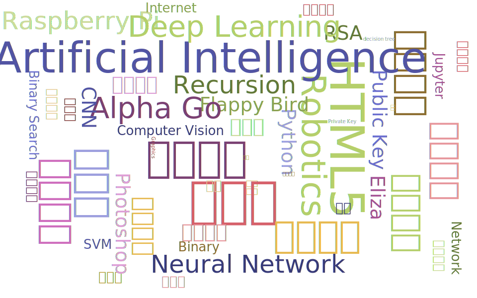

你够格吗？
敢不敢来HackerCamp和我们一起玩转时下最火的AI和VR？

你敢挑战普林斯顿计算机系的课程吗？
你敢凭借一副机械键盘，写遍天下代码吗？
今天我们给你带来了超浓缩版的
普林斯顿计算机入门课
等你来挑战！
你有入读世界级名校的野心吗？
普林斯顿、哈佛、麻省，你有信心攀登吗？
我们能为你的申请加油助力
只要做出了足够精彩的作品集
什么是HackerCamp？
结合美国顶级理工名校教学宗旨，引进文理学院式的小班教学概念，HackerCamp将在这个暑假召集起一批最痴迷科技的高中生，与几位来自美国顶尖计算机学科系的导师一起，通过轻松生动的课堂互动，探讨当下计算机领域最炙手可热的核心技术。
HackerCamp将会涵盖计算机学科中的几个前沿方向，向学生讲解最新的技术，并引导学生实践与创新，完成属于自己的作品：它可以是一款有趣的HTML5页游、一个创新的智能家居设备、甚至是一部能听懂人说话的无人机…
我能在HackerCamp学到什么？
-

Python编程
Python是许多美国大学计算机入门课程的授课编程语言之一，简单易懂，并且有很强的延展性。在人工智能、图像处理，Web开发甚至是嵌入式开发都有Python的身影。HackerCamp将全程使用Python教学，让学员体验Python在计算机学科不同方向中的应用，用一门语言闯天下。
-

机器学习/人工智能
人工智能（Artificial Intelligence）与机器学习（Machine Learning）都是近几年最流行的研究方向。智能化时代即将到来，再不了解一下人工智能背后的原理恐怕就要被时代抛弃了。HackerCamp导师将介绍几种常用的机器学习方法，带领学员用Python语言编写人工智能程序，让电脑可以和你对话、识别写的字。
-

图像处理/机器视觉
美图秀秀玩得转不够酷，写得出自己的美图秀秀程序才叫酷！HackerCamp将会介绍图像处理背后的矩阵运算原理，写出自己的美颜相机。不过，小脸P得再美丽，机器人也能轻松认出你。机器人是如何做到的？来HackerCamp就知道了！
-
智能硬件/机器人/无人机
机器人是怎么造出来的？我们从二进制讲起，带领学生了解逻辑电路和传感器的工作原理。
HackerCamp的导师将会带领学员用Raspberry Pi搭建机器人、制作智能家居硬件。
最后还有无人机比赛，看谁写的程序能让无人机飞得最酷炫。
日程安排
-

Day 1
Python编程
-

Day 2
HTML5页游
-

Day 3
网络与互联网
-

Day 4
图像处理与识别
-

Day 5
智能硬件与机器人
-

Day 6
人工智能AI
-

Day 7
人机交互和无人机
HackerCamp导师
-

球球
邱慧莲老师，昵称球球，普林斯顿计算机科学系的硕士生，也是普林斯顿的计算机系统入门讲师；本科就读于美国布朗大学，攻读计算机科学理学士学位和东亚研究文学士学位；Girls Who Code组织的志愿者，有着丰富的相关活动的组织经验和计算机教学经验。
-

Simon
梁皓然Simon老师，美国亚马逊西雅图办公室时装部门软件工程师；大学在美国Rose-Hulman理工学院潜心修读计算机科学，并钻研机器视觉和计算机图像处理；高中时曾创建机器人队，并创造了学校首次参加机器人足球项目就获得广州市和广东省第一的成绩；曾参加过机器人世界杯RoboCup获得银牌。
TODO: 扫二维码